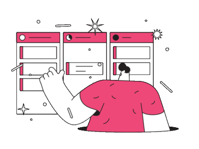

Organize & Collaborate with Kanban Board
Amplify your work efficiency by
navigating projects to optimize
the flow of your work

Amplify your work efficiency by
navigating projects to optimize
the flow of your work